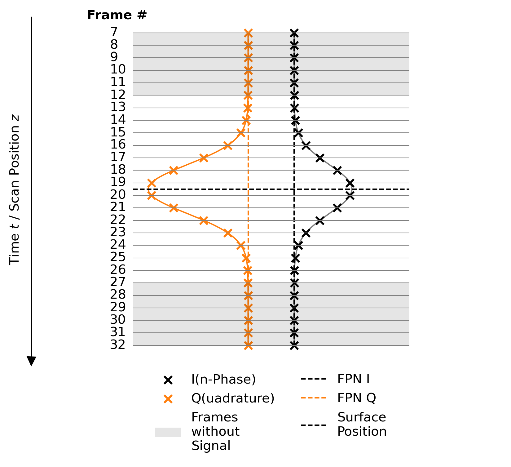

TN_19.10.0.1: Configuring Offset (FPN) Correction
Challenge: FPN Removal as a Necessary Pre-Processing Step
Raw measurement data is subject to a constant, pixel-dependent offset called fixed pattern noise (FPN), see Fig. 6. Knowing and removing each pixel’s FPN is required prior to subsequent on-camera processing (» H8 Programmer’s Guide, chapter Signal Processing). FPN can be measured by averaging raw data across frames void of any interference signal. How you can ensure the FPN correction is accurate is explained in this technical note.
{kind=link}

Fig. 6 Schematic, Single-Pixel Raw WLI Signal in heliInspect Devices are Offset by FPN
In every scan with a heliInspect, a stack of frame pairs is recorded, containing the signal’s In-Phase, \(I\), and Quadrature, \(Q\), components respectively. \(I\) and \(Q\) each has a pixel-dependent semi-random offset called FPN that is constant across frames. The signal processing implemented on heliInspect devices measures FPN on both components individually for ensuing subtraction. It does so by pixel-wise averaging of a configurable subset of frames assuming that these do not contain interference signal.
Solution: Configure a Frame Range for Averaging Sufficiently Far from the Surface
The configurable number of frames at either end of the scan range can be used to determine FPN. You may thus set this range of frames to be sufficiently far from the surface position in the frame stack using camera features.
Implementation
The feature FPNCorrection allows you to choose a zone of frames for FPN correction
either at the beginning (AverageFirstFrames) or the end (AverageLastFrames) of the
scanned volume.
FPNCorrectionNFrames sets the depth of the zone (in units of frames) used for FPN
calculation.
FPNCorrection = "AverageLastFrames"
FPNCorrectionNFrames = 8
Note
Valid settings of FPNCorrectionNFrames are \(1, 2, 4, 8, 16, 32 \, \& \, 64\).
Values below \(8\) may affect the repeatability of topology results since additional
random noise gets insufficiently averaged.
Note
The selection between AverageFirstFrames and AverageLastFrames refers to the
time axis. Whether these are the uppermost or lowest frames depends on the scan direction
configured determined the feature ScanMode.
Important
Unsound and or even erratic results will arise if the measured sample surface is within or close to the specified range of frames used for FPN calculation.
The center of the scan interval is given by ScanPosition and its full length
by ScanRange in physical units. RecordingNFrames returns the number of frames recorded
over this scan range.
The scan range effectively available for the surface measurement is given by:
Document History
Version |
Date |
Changes |
Responsible |
|---|---|---|---|
19.10.0.0 |
07-04-2025 |
Initial version |
|
19.10.0.1 |
12-06-2025 |
Review |
bm |